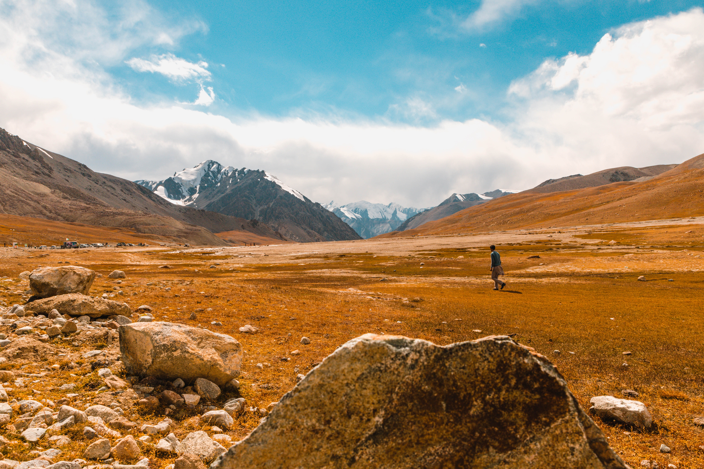
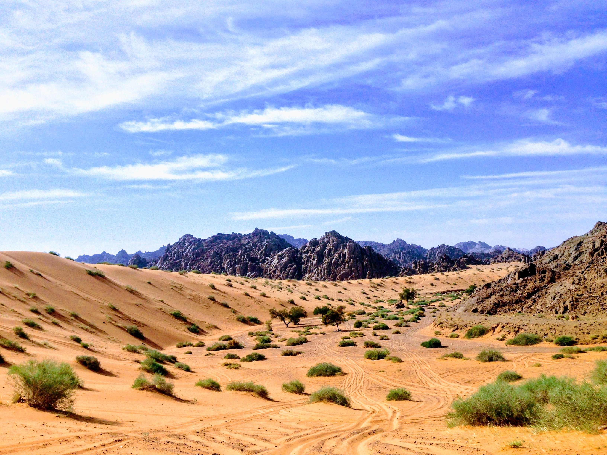
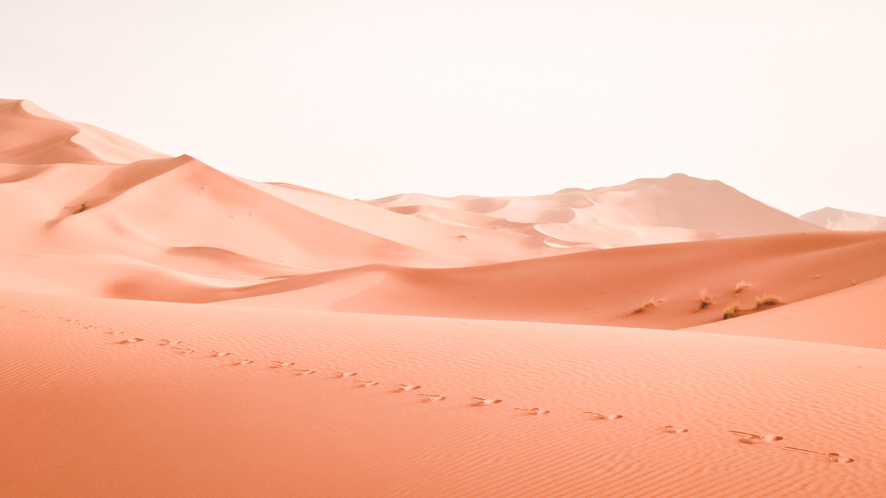
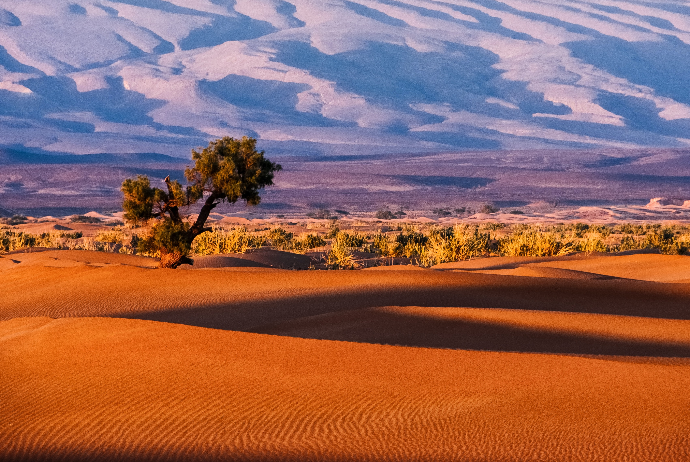

Kharan Desert

The Karan Desert is a vast desert situated in the Balochistan province in south-western Pakistan. This sandy
and mountainous region also served as a site of Pakistan’s second nuclear test, Chagai-II, which was carried
out on 30 May 1998.
The region has a dry climate. The inhabitants of the region are usually into agriculture and farming. The
terrain is mainly dry, gray-brown sand that stretches out.
Although the Balochistan region is characterized by harsh and dry climatic conditions, the Kharan desert can
be separated from the rest of the arid landscape due to its sandy nature and even terrain, ranging from 1000
m in the north-east to 500 m in the west.
The desert is situated in the Kharan District, covering an area of around 20,000 sq km with a population of
only 0.23 million. In the north, east, and west it is surrounded by beautiful hills, up to 3000 meters,
while on the west it extends into Iranian territories.
Thar Desert

The next major desert in Pakistan is the Thar Desert. It is the largest desert in Pakistan.
Also known as the Great Indian Desert, Thar Desert is another arid region in the northwestern part of the
Indian subcontinent that covers an area of 200,000 km2 (77,000 sq mi). The Thar Desert is also the world’s
17th largest desert and the world’s 9th largest subtropical desert.
Thar desert is split between Pakistan and India with its 85% area in India and 15% is in Pakistan. In India,
it covers about 170,000 km2 (66,000 sq mi), and the remaining 30,000 km2 (12,000 sq mi) of the desert is
within Pakistan.
Saltwater lakes within the Thar Desert include the Sambhar, Kuchaman, Didwana, Pachpadra, and Phalodi in
Rajasthan and Kharaghoda in Gujarat. Some dams in Pakistan are the perfect vacation spot, provides you
swimming spot, beautiful scenic views, and fishing.
Thal Desert

The third major desert in Pakistan is the Thal Desert. It is situated in Punjab, Pakistan between the Jhelum
and Sindh rivers near the Pothohar Plateau. The Thal Desert has an approximate area of 20000 km square. It
is also the third-largest desert in Pakistan. The desert extends over a length of 305km and has a width
varying from 32km to as much as 112km. Around 50-60% of the desert is covered in dunes.
The desert covers the districts of Bhakkar, Khushab, Mianwali, Layyah, Muzaffargarh as well as Jhang, from
the left bank of the river Jhelum.
Vegetation in the area is not possible because of hot and dry weather. The only vegetation possible in the
region includes a few species of drought-resistant grass, shrubs, and trees. The inhabitants of the desert
get the water from the Thal Canal. The water is used for everyday tasks, irrigation, and feeding the cattle.
Cholistan Desert

The Cholistan Desert, also known as the Rohi Desert among the locals is located in the southern region of
Pakistan. The name is derived from the Turkic word chol, meaning “sands”, and istan, a Persian suffix
meaning “land of”.
In ancient years, the desert was a fertile region with water coming from the Himalayan range. The area later
turned into a center for caravan trade which led to the establishment of many forts, including the Derawar
Fort.
Cholistan covers an area of 25,800 km2 (10,000 sq mi) in the Bahawalpur, Bahawalnagar, and Rahim Yar Khan
districts of southern Punjab. The nearest major city is Bahawalpur city, 30 km (19 mi) from the edge of the
desert.
The desert is about 480 kilometers in length, with a width varying between 32 and 192 kilometers. 81% of the
desert is sandy, while 19% is characterized by alluvial flats and small sandy dunes.
Cold Desert ( Skardu )
The Cold Desert, also known as the Katpana Desert or Biama Nakpo is a high-altitude desert located near
Skardu, Gilgit−Baltistan, Pakistan.[1] The desert contains large sand dunes that are sometimes covered in
snow during winter. Situated at an elevation of 2,226 metres (7,303 ft) above sea level, the Cold Desert is
one of the highest deserts in the world. While the desert technically stretches from the Khaplu Valley to
Nubra in Indian-administered Ladakh, the largest desert area proper is found in Skardu and Shigar Valley,
both within Pakistani-administered territory. The portion of the desert that is most frequented by tourists
is located near the Skardu Airport.
Katpana Desert
 The Cold Desert is a high-altitude desert located near Skardu, in Pakistan's northern Gilgit-Baltistan
region. The desert contains expanses of large sand dunes that are sometimes covered in snow during winter.
Situated at an elevation of 2,226 metres (7,303 feet) above sea level, the Katpana Desert is one of the
highest deserts in the world.
The desert technically stretches from the Khaplu Valley to Nubra in Ladakh, but the largest desert area is
found in Skardu and Shigar Valley. The portion most visited is located near Skardu Airport.
The Cold Desert is a high-altitude desert located near Skardu, in Pakistan's northern Gilgit-Baltistan
region. The desert contains expanses of large sand dunes that are sometimes covered in snow during winter.
Situated at an elevation of 2,226 metres (7,303 feet) above sea level, the Katpana Desert is one of the
highest deserts in the world.
The desert technically stretches from the Khaplu Valley to Nubra in Ladakh, but the largest desert area is
found in Skardu and Shigar Valley. The portion most visited is located near Skardu Airport.